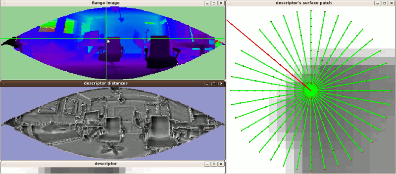

Visualization of the NARF descriptor and descriptor distances
This tutorial is about the visualization of how the NARF descriptor is calculated and to test how the descriptor distances between certain points in a range image behave. Compared to the other tuturials, this one is not really about the code, but about trying the program and looking at the visualization. Of course, nothing keeps you from having a look at it anyway.
The code
First, create a file called, let’s say, narf_descriptor_visualization.cpp in your favorite
editor, and place the following code inside it:
1/* \author Bastian Steder */
2
3#include <iostream>
4
5#include <pcl/point_cloud.h>
6#include <pcl/io/pcd_io.h>
7#include <pcl/visualization/range_image_visualizer.h>
8#include <pcl/range_image/range_image.h>
9#include <pcl/features/narf.h>
10#include <pcl/console/parse.h>
11#include <pcl/common/file_io.h> // for getFilenameWithoutExtension
12
13float angular_resolution = 0.5f;
14int rotation_invariant = 0;
15float support_size = 0.3f;
16int descriptor_size = 36;
17pcl::RangeImage::CoordinateFrame coordinate_frame = pcl::RangeImage::CAMERA_FRAME;
18bool setUnseenToMaxRange = false;
19
20typedef pcl::PointXYZ PointType;
21
22void
23printUsage (const char* progName)
24{
25 std::cout << "\n\nUsage: "<<progName<<" [options] <scene.pcd>\n\n"
26 << "Options:\n"
27 << "-------------------------------------------\n"
28 << "-r <float> angular resolution in degrees (default "<<angular_resolution<<")\n"
29 << "-s <float> support size for the interest points (diameter of the used sphere - "
30 << "default "<<support_size<<")\n"
31 << "-d <int> descriptor size (default "<<descriptor_size<<")\n"
32 << "-c <int> coordinate frame of the input point cloud (default "<< (int)coordinate_frame<<")\n"
33 << "-o <0/1> switch rotational invariant version of the feature on/off"
34 << " (default "<< (int)rotation_invariant<<")\n"
35 << "-m set unseen pixels to max range\n"
36 << "-h this help\n"
37 << "\n\n";
38}
39
40int
41main (int argc, char** argv)
42{
43 // --------------------------------------
44 // -----Parse Command Line Arguments-----
45 // --------------------------------------
46 if (pcl::console::find_argument (argc, argv, "-h") >= 0)
47 {
48 printUsage (argv[0]);
49 return 0;
50 }
51 if (pcl::console::find_argument (argc, argv, "-m") >= 0)
52 {
53 setUnseenToMaxRange = true;
54 std::cout << "Setting unseen values in range image to maximum range readings.\n";
55 }
56 if (pcl::console::parse (argc, argv, "-o", rotation_invariant) >= 0)
57 std::cout << "Switching rotation invariant feature version "<< (rotation_invariant ? "on" : "off")<<".\n";
58 int tmp_coordinate_frame;
59 if (pcl::console::parse (argc, argv, "-c", tmp_coordinate_frame) >= 0)
60 {
61 coordinate_frame = pcl::RangeImage::CoordinateFrame (tmp_coordinate_frame);
62 std::cout << "Using coordinate frame "<< (int)coordinate_frame<<".\n";
63 }
64 if (pcl::console::parse (argc, argv, "-s", support_size) >= 0)
65 std::cout << "Setting support size to "<<support_size<<".\n";
66 if (pcl::console::parse (argc, argv, "-d", descriptor_size) >= 0)
67 std::cout << "Setting descriptor size to "<<descriptor_size<<".\n";
68 if (pcl::console::parse (argc, argv, "-r", angular_resolution) >= 0)
69 std::cout << "Setting angular resolution to "<<angular_resolution<<"deg.\n";
70 angular_resolution = pcl::deg2rad (angular_resolution);
71
72
73 // -----------------------
74 // -----Read pcd file-----
75 // -----------------------
76 pcl::PointCloud<PointType>::Ptr point_cloud_ptr (new pcl::PointCloud<PointType>);
77 pcl::PointCloud<PointType>& point_cloud = *point_cloud_ptr;
78 pcl::PointCloud<pcl::PointWithViewpoint> far_ranges;
79 Eigen::Affine3f scene_sensor_pose (Eigen::Affine3f::Identity ());
80 std::vector<int> pcd_filename_indices = pcl::console::parse_file_extension_argument (argc, argv, "pcd");
81 if (!pcd_filename_indices.empty ())
82 {
83 std::string filename = argv[pcd_filename_indices[0]];
84 if (pcl::io::loadPCDFile (filename, point_cloud) == -1)
85 {
86 std::cout << "Was not able to open file \""<<filename<<"\".\n";
87 printUsage (argv[0]);
88 return 0;
89 }
90 scene_sensor_pose = Eigen::Affine3f (Eigen::Translation3f (point_cloud.sensor_origin_[0],
91 point_cloud.sensor_origin_[1],
92 point_cloud.sensor_origin_[2])) *
93 Eigen::Affine3f (point_cloud.sensor_orientation_);
94 std::string far_ranges_filename = pcl::getFilenameWithoutExtension (filename)+"_far_ranges.pcd";
95 if (pcl::io::loadPCDFile (far_ranges_filename.c_str (), far_ranges) == -1)
96 std::cout << "Far ranges file \""<<far_ranges_filename<<"\" does not exists.\n";
97 }
98 else
99 {
100 std::cout << "\nNo *.pcd file for scene given.\n\n";
101 printUsage (argv[0]);
102 return 1;
103 }
104
105 // -----------------------------------------------
106 // -----Create RangeImage from the PointCloud-----
107 // -----------------------------------------------
108 float noise_level = 0.0;
109 float min_range = 0.0f;
110 int border_size = 1;
111 pcl::RangeImage::Ptr range_image_ptr (new pcl::RangeImage);
112 pcl::RangeImage& range_image = *range_image_ptr;
113 range_image.createFromPointCloud (point_cloud, angular_resolution, pcl::deg2rad (360.0f), pcl::deg2rad (180.0f),
114 scene_sensor_pose, coordinate_frame, noise_level, min_range, border_size);
115 range_image.integrateFarRanges (far_ranges);
116 if (setUnseenToMaxRange)
117 range_image.setUnseenToMaxRange ();
118
119 // Extract NARF features:
120 std::cout << "Now extracting NARFs in every image point.\n";
121 std::vector<std::vector<pcl::Narf*> > narfs;
122 narfs.resize (range_image.size ());
123 unsigned int last_percentage=0;
124 for (unsigned int y=0; y<range_image.height; ++y)
125 {
126 for (unsigned int x=0; x<range_image.width; ++x)
127 {
128 const auto index = y*range_image.width+x;
129 const auto percentage = ((100*index) / range_image.size ());
130 if (percentage > last_percentage)
131 {
132 std::cout << percentage<<"% "<<std::flush;
133 last_percentage = percentage;
134 }
135 pcl::Narf::extractFromRangeImageAndAddToList (range_image, x, y, descriptor_size,
136 support_size, rotation_invariant != 0, narfs[index]);
137 //std::cout << "Extracted "<<narfs[index].size ()<<" features for pixel "<<x<<","<<y<<".\n";
138 }
139 }
140 std::cout << "100%\n";
141 std::cout << "Done.\n\n Now you can click on points in the image to visualize how the descriptor is "
142 << "extracted and see the descriptor distances to every other point..\n";
143
144 //---------------------
145 // -----Show image-----
146 // --------------------
147 pcl::visualization::RangeImageVisualizer range_image_widget ("Scene range image"),
148 surface_patch_widget("Descriptor's surface patch"),
149 descriptor_widget("Descriptor"),
150 descriptor_distances_widget("descriptor distances");
151 range_image_widget.showRangeImage (range_image);
152 //range_image_widget.visualize_selected_point = true;
153
154 //--------------------
155 // -----Main loop-----
156 //--------------------
157 while (true)
158 {
159 range_image_widget.spinOnce (); // process GUI events
160 surface_patch_widget.spinOnce (); // process GUI events
161 descriptor_widget.spinOnce (); // process GUI events
162 pcl_sleep(0.01);
163
164 //if (!range_image_widget.mouse_click_happened)
165 continue;
166 //range_image_widget.mouse_click_happened = false;
167 //float clicked_pixel_x_f = range_image_widget.last_clicked_point_x,
168 //clicked_pixel_y_f = range_image_widget.last_clicked_point_y;
169 int clicked_pixel_x, clicked_pixel_y;
170 //range_image.real2DToInt2D (clicked_pixel_x_f, clicked_pixel_y_f, clicked_pixel_x, clicked_pixel_y);
171 if (!range_image.isValid (clicked_pixel_x, clicked_pixel_y))
172 continue;
173 //Vector3f clicked_3d_point;
174 //range_image.getPoint (clicked_pixel_x, clicked_pixel_y, clicked_3d_point);
175
176 //surface_patch_widget.show (false);
177 //descriptor_widget.show (false);"
178
179 int selected_index = clicked_pixel_y*range_image.width + clicked_pixel_x;
180 pcl::Narf narf;
181 if (!narf.extractFromRangeImage (range_image, clicked_pixel_x, clicked_pixel_y,
182 descriptor_size, support_size))
183 {
184 continue;
185 }
186
187 int surface_patch_pixel_size = narf.getSurfacePatchPixelSize ();
188 float surface_patch_world_size = narf.getSurfacePatchWorldSize ();
189 surface_patch_widget.showFloatImage (narf.getSurfacePatch (), surface_patch_pixel_size, surface_patch_pixel_size,
190 -0.5f*surface_patch_world_size, 0.5f*surface_patch_world_size, true);
191 /*float surface_patch_rotation = narf.getSurfacePatchRotation ();
192 float patch_middle = 0.5f* (float (surface_patch_pixel_size-1));
193 float angle_step_size = pcl::deg2rad (360.0f)/narf.getDescriptorSize ();
194 float cell_size = surface_patch_world_size/float (surface_patch_pixel_size),
195 cell_factor = 1.0f/cell_size,
196 max_dist = 0.5f*surface_patch_world_size,
197 line_length = cell_factor* (max_dist-0.5f*cell_size);
198 for (int descriptor_value_idx=0; descriptor_value_idx<narf.getDescriptorSize (); ++descriptor_value_idx)
199 {
200 float angle = descriptor_value_idx*angle_step_size + surface_patch_rotation;
201 //surface_patch_widget.markLine (patch_middle, patch_middle, patch_middle+line_length*sinf (angle),
202 //patch_middle+line_length*-std::cos (angle), pcl::visualization::Vector3ub (0,255,0));
203 }
204 std::vector<float> rotations, strengths;
205 narf.getRotations (rotations, strengths);
206 float radius = 0.5f*surface_patch_pixel_size;
207 for (unsigned int i=0; i<rotations.size (); ++i)
208 {
209 //surface_patch_widget.markLine (radius-0.5, radius-0.5, radius-0.5f + 2.0f*radius*sinf (rotations[i]),
210 //radius-0.5f - 2.0f*radius*std::cos (rotations[i]), pcl::visualization::Vector3ub (255,0,0));
211 }*/
212
213 descriptor_widget.showFloatImage (narf.getDescriptor (), narf.getDescriptorSize (), 1, -0.1f, 0.3f, true);
214
215 //===================================
216 //=====Compare with all features=====
217 //===================================
218 const std::vector<pcl::Narf*>& narfs_of_selected_point = narfs[selected_index];
219 if (narfs_of_selected_point.empty ())
220 continue;
221
222 //descriptor_distances_widget.show (false);
223 float* descriptor_distance_image = new float[range_image.size ()];
224 for (unsigned int point_index=0; point_index<range_image.size (); ++point_index)
225 {
226 float& descriptor_distance = descriptor_distance_image[point_index];
227 descriptor_distance = std::numeric_limits<float>::infinity ();
228 std::vector<pcl::Narf*>& narfs_of_current_point = narfs[point_index];
229 if (narfs_of_current_point.empty ())
230 continue;
231 for (unsigned int i=0; i<narfs_of_selected_point.size (); ++i)
232 {
233 for (unsigned int j=0; j<narfs_of_current_point.size (); ++j)
234 {
235 descriptor_distance = (std::min)(descriptor_distance,
236 narfs_of_selected_point[i]->getDescriptorDistance (*narfs_of_current_point[j]));
237 }
238 }
239 }
240 descriptor_distances_widget.showFloatImage (descriptor_distance_image, range_image.width, range_image.height,
241 -std::numeric_limits<float>::infinity (), std::numeric_limits<float>::infinity (), true);
242 delete[] descriptor_distance_image;
243 }
244}
Compiling and running the program
Add the following lines to your CMakeLists.txt file:
1cmake_minimum_required(VERSION 3.5 FATAL_ERROR)
2
3project(narf_descriptor_visualization)
4
5find_package(PCL 1.3 REQUIRED)
6
7include_directories(${PCL_INCLUDE_DIRS})
8link_directories(${PCL_LIBRARY_DIRS})
9add_definitions(${PCL_DEFINITIONS})
10
11add_executable (narf_descriptor_visualization narf_descriptor_visualization.cpp)
12target_link_libraries (narf_descriptor_visualization ${PCL_LIBRARIES})
You can now try it with a point cloud file from your hard drive:
$ ./narf_descriptor_visualization <point_cloud.pcd>
It will take a few second, during which you will see the status in the terminal. During this time, a NARF feature is extracted in every point of the range image created from the given point cloud. When it is done, a widget showing the range image pops up. Now click on a point in the range image. If it is a valid image point, three additional widgets will pop up. One visualizing the actual descriptor as a row of gray values, one showing a local range image patch of the area on which you clicked, overlaid with a star shaped pattern. Each beam corresponds to one of the cells in the descriptor. The one facing upwards to the first cell and then going clockwise. The basic intuition is, that the more the surface changes under the beam, the higher (brighter) the value of the corresponding descriptor cell. There is also one or more red beams, which mark the extracted dominant orientations of the image patch, which, together with the normal, is used to create a unique orientation for the feature coordinate frame. The last image visualizes the descriptor distances to every other point in the scene. The darker the value, the more similar the point is to the clicked image point.
The result should look similar to this:
Also have a look at:
$ ./narf_descriptor_visualization -h
for a list of parameters.